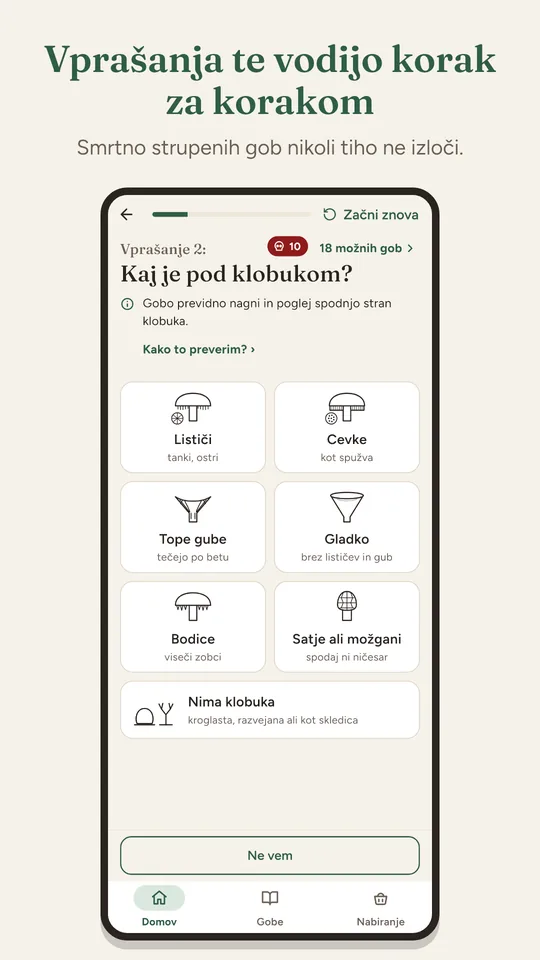

Case study · Gobe · Android · 2026
An app that deliberately doesn't identify mushrooms
The faster route was an app that identifies a mushroom from a photo. I built the slower one: an app that teaches beginners what to look at. From idea to Google Play in 23 days.

- days from the first line of the spec to public launch
- 23
- “don't know” answers on the volva question after I added photos to the help (before: 60%)
- 8%
- species at launch, up from 25
- 64
- automated tests guarding every change
- 542
01 · Why I started
Time, freedom and the wish to make something of my own
When I finished at my last job, I suddenly had time and freedom. And a strong wish to take a whole product from idea to launch on my own, with analytics from day one.
Then came the idea of mushrooms. I don't know them, and many people don't know where to start. Not everyone wants to join a society. There had to be a simpler way. Not knowing them was an advantage: I could test every step on myself.
I've also always been bothered by how we strip the forest. We pick more mushrooms and chestnuts than we eat, and some end up in the bin. Technology can be a mentor: it can teach what's right and what the law says, and build patience.
The goal: a beginner who recognises their first chanterelle in the forest, before picking it, not back home with the help of strangers on Facebook.
02 · Insight
People aren't looking for knowledge. They're looking for an answer.
Every day, beginners in Facebook foraging groups post a photo of a mushroom and ask strangers. Under the same photo, one person writes “poisonous”, the next “edible”. A beginner can't tell who is right.
By October 2026, the Clinical Toxicology Centre in Ljubljana had treated 21 mushroom poisonings that year, and 533 over five years. Toxicologist Dr Lucija Šarc warns that families often check what they ate only after the meal.
The obvious solution was a “snap and identify” app. Simple, fast, high impact. And wrong. It would encourage even more careless picking. Worse, it would give false confidence. A chanterelle can be mistaken for the deadly webcap.
One more answer doesn't solve this. An app that teaches people to judge does.
It doesn't identify mushrooms. It teaches you to look at them.
The product promise
03 · Who it's for
One user: the beginner who wants to learn
04 · How I built it with AI
With AI, building anything is fast. Building the right thing is harder.
I'm not a developer. Claude Code wrote the code; the decisions were mine.
An app in a day didn't interest me. With AI you quickly get something that works but has neither head nor tail. I looked for a balance between instructions, management and control.
Instructions
On day one I wrote a product document: purpose, non-goals, safety rules and success criteria. AI got rules that apply everywhere. For example: never invent a source; mark anything without one as “source missing”.
Management
I split the build into nine phases and wrote down a reason for the order. Design before screens, so I build them once. Data before screens, so I test on real mushrooms. Analytics only once the app is whole.
Control
Every screen started as a mock-up. Code came only after I approved the mock-up. Every phase ended with a review and tests: 542 by the end.
In the end the product reflected the original goal, not whatever was easiest to build.
The flow
From idea to Google Play in 23 days
- 5 OctRulesProduct document: purpose, non-goals, safety, success criteria.
- 6 OctPlanNine phases and their order. A full launch instead of a demo with 8 mushrooms.
- 6–9 OctBuildPhase by phase, each in the same loop.
- 12–26 OctClosed test12 testers, 14 days and a walk in the forest. 25 → 64 species.
- 28 OctLaunchPublic on Google Play.
- from 28 OctMeasureWhat people open and where they stop.
The loop in every phase
- Mock-up
- I approve
- Code with Claude Code
- Tests
- Review
05 · What I had to watch out for
“Edible” on the wrong mushroom can be fatal
The quiz never silently rules out a deadly mushroom.
The risk isn't symmetrical. A wrong “don't know” costs a full basket. A wrong “edible” can have serious consequences.
“Don't know” is always allowed.
And it never rules out a dangerous mushroom.
Colour is a soft sign.
The death cap often has an olive-brown cap, and a beginner says “brown”. So colour doesn't rule a mushroom out, it only moves it down the list.
Every fact has a source.
When sources disagree, the stricter label wins.
Law, nature and privacy.
Protected species by regulation, picking rules by the Mycological Association's code, analytics only once the user taps “Allow”.

06 · Shortcuts I didn't take
Where I could have gone faster, and didn't
Photo identification
A quiz that teaches you to look. A photo doesn't show a volva in the soil, a smell or a colour change when cut. The price: fewer downloads.
A demo with 8 mushrooms for LinkedIn
A full Google Play launch. With sources, terms of use, a privacy policy and a closed test. I decided on day two.
Launching with 25 species
64 species. Testers reported 33 times that their mushroom was missing from the app. I checked every new species against sources.
Data from the sofa
A test in the forest. Testers mostly clicked through the quiz at home. That kind of data measures curiosity, not use.
Raw numbers
A filter for test devices. Google's test bots counted as users. Active devices weren't 87, but 57.
07 · Where I kept it simple
Less was more
No accounts or server
Nobody needs to sign in. Everything is inside the app.
No internet, camera or location
There's no signal in the forest. Fewer permissions, more privacy.
No waiting for an expert review
Google Play doesn't require one. I had set that requirement myself and replaced it with sources.
No app for everyone
One main user and one promise.
No warnings on every update
The warning shows on first launch. Too many warnings and people stop reading.
No ads
An ad next to a warning about a deadly mushroom would undermine trust.

08 · What the data showed
People open the dangerous lookalikes
The most opened mushroom in the first week was the false chanterelle, a poisonous lookalike of the chanterelle. Second was the deadly dapperling, a deadly lookalike of the parasol. The porcini isn't in the top eight.
55% of opens were at the weekend, when people go foraging. The numbers are small: 46 people with analytics in one week. But the direction is clear.
They're not just looking for a name. They're looking for the difference between edible and poisonous.
09 · What I learned
For every next product
Letting go is hardest
Especially a feature everyone expects.
AI speeds up building, not quality
The first working version was ready in a week. What improved the app was the slow part: testing, sources and reviews.
Test where it's used
For Gobe, that's the forest, not the sofa.
Measure before testing
Without analytics I'd have had a feeling, not evidence.
Contact
Do you have an idea or a product, but aren't sure who it's for and what it must do?
Write me a few lines. I'll reply personally.